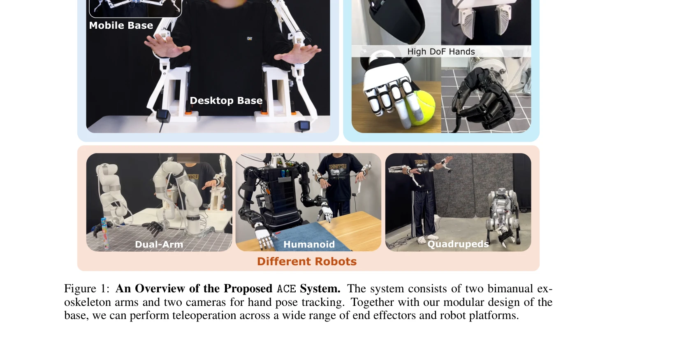
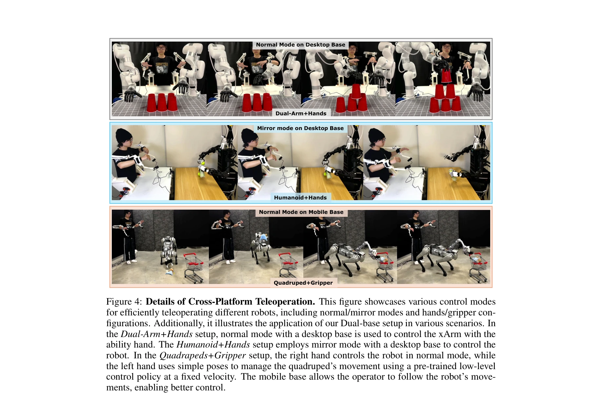
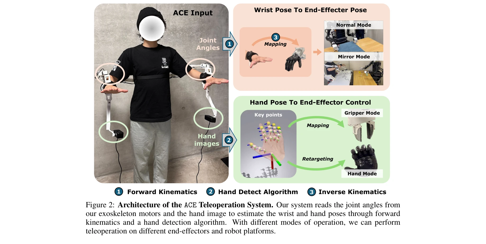

저자: Shiqi Yang, Minghuan Liu, Yuzhe Qin, Runyu Ding, Jialong Li, Xuxin Cheng, Ruihan Yang, Sha Yi, Xiaolong Wang | 날짜: 2024-08-21 | URL: https://arxiv.org/abs/2408.11805

Figure 1: An Overview of the Proposed ACE System. The system consists of two bimanual ex-
ACE는 3D 프린팅된 이중팔 exoskeleton과 hand-facing 카메라를 결합한 저비용 cross-platform 시각 기반 원격 조종 시스템으로, 다양한 로봇 플랫폼과 end-effector에 대해 정밀한 손과 손목 자세 추적을 가능하게 한다.

Figure 4: Details of Cross-Platform Teleoperation. This figure showcases various control modes

Figure 2: Architecture of the ACE Teleoperation System. Our system reads the joint angles from
총평: ACE는 기존 원격 조종 시스템의 비용-정확도-유연성 trade-off를 효과적으로 해결한 실용적인 솔루션으로, 저비용의 3D 프린팅 exoskeleton과 vision-kinematics 하이브리드 방식을 통해 다양한 로봇 플랫폼에서의 대규모 데이터 수집을 가능하게 한다는 점에서 높은 가치를 제공한다.